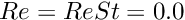

In this tutorial we demonstrate another adaptive solution of free surface problems on unstructured meshes, using the example of a droplet propagating along a straight channel. The problem is extremely similar to the propagation of a bubble in a channel tutorial . Thus, we shall only discuss the differences from that tutorial. The key physical difference is that instead of the uniform pressure state in an inviscid bubble, the droplet consists of a viscous fluid that can support internal stress variations.
The example problem
We illustrate the solution of the unsteady 2D Navier-Stokes equations by considering the propagation of a single droplet along a straight channel as shown in the sketch below. The non-dimensionalisation is the same as in the bubble tutorial, and we choose the viscosity and density of the surrounding liquid to be the reference values.

The governing equations and boundary conditions are the same as those in the
bubble tutorial. The only difference is that the Navier–Stokes equations must also be solved within the droplet. In fact, this is a two-fluid problem, a class of problems that is first introduced in another tutorial.
The constraint that the droplet volume remains constant must be enforced explicitly in the static case, as in the bubble problem. In the time-simulations, however, a constant drop volume is implicitly enforced by the continuity equation. For the bubble, the continuity equation is not solved within the interior, which is why the volume constraint must always be explicitly enforced in that case.
Implementation
We use the same method as in the bubble problem, an ALE-based finite-element method with a pseudo-elastic node-update procedure. In this case, there is a pressure jump across the interface between the fluids, which means that we use triangular Crouzeix–Raviart elements rather than the continuous-pressure Taylor–Hood elements. Again, we impose the kinematic and dynamic boundary conditions with FaceElements. The volume constraint for the static problem is also imposed in a similar way: we attach LineVolumeConstraintBoundingSolidElements to the droplet surface and create an additional VolumeConstraintElement. Here, a pressure degree of freedom within the droplet is hijacked, see another tutorial, to be used as the unknown associated with the volume constraint. Once the static initial problem has been solved, the "volume constraint" elements are deleted and the pressure degree of freedom is unhijacked.
Results
We perform the simulation in a two-stage procedure. We start by performing a steady solve with the inflow switched off. This deforms the droplet into its steady state (approximately) circular configuration with the required volume. The actual time-dependent simulation is then performed with an impulsive start from this configuration.
The figure below shows the location of the droplet and mesh (upper figure) and a contour plot of the pressure distribution with overlaid velocity vectors of the difference between the background Poiseuille flow and the velocity field (lower figure). The figure is a snapshot for the parameters , and a droplet that is ten times as viscous as the surrounding liquid.

Global parameters
The namespace containing the dimensionless parameters contains an additional viscosity ratio parameter, compared to that in the bubble problem .
The driver code
The first difference from the bubble problem is that the steady solver does not converge when  . Instead, we start with , solve the steady problem, set and then resolve.
. Instead, we start with , solve the steady problem, set and then resolve.
After documenting the solution, we remove the (explicit) volume constraint and then the remainder of the code is identical to that in the bubble tutorial.
The problem class
Other than trivial name changes from "bubble" to "drop", there are a few significant changes between this problem and that in the
bubble tutorial. There is an additional boolean Use_volume_constraint and an additional function remove_volume_constraint(), which are used to manage the switch from the explicit enforcement of the volume constraint in the static case to the implicit enforcement in the time simulations. The other key difference is that we use Triangle's region attributes to distinguish the elements inside the droplet from those outside. The default behaviour is that all elements are in region 0, but we label those element within the drop as region 1.
The problem constructor
The construction of the mesh proceeds in exactly the same way as in bubble tutorial, except that we add a region tag "1" to label the elements within the droplet (so we specify a coordinate within the drop) and we must tell Triangle to use the assigned attributes.
The remainder of the constructor is the same as the other tutorial.
Problem setup
When the bulk elements are made fully functional, we add the pointer to the viscosity ratio to all elements in the drop (region 1).
Generation of face elements
As usual we impose the kinematic and dynamic boundary condition at the interface by attaching FaceElements to the relevant boundaries of the bulk elements. However, we must be careful to add only a single layer of elements. If we use the standard "boundary element" functions then we will be creating face elements on both sides of the internal boundary. Instead, we use the elements adjacent to the boundary within region 0, which ensures that only a single layer of interface elements are added.
The volume constraint elements are only created if the boolean flag Use_volume_constraint is true (the default on construction of the problem). We hijack the pressure degree of freedom associated with the first element in region 1 and then the construction of the elements again uses the regions to ensure that a single layer of elements is created.
Removal of the volume constraint
The function remove_volume_constraint(), resets the boolean flag to false, clears the hijacked data, deletes the volume constraint elements and mesh and then removes the volume constraint mesh from the problem's list of sub meshes, before reassigning the equation numbers.
Comments and Exercises
The computation of the initial static solution means that we must still include the calls to the create_volume_constraint_elements() and delete_volume_constraint_elements() in actions_before_adapt() and actions_after_adapt(). We have chosen to have the functions return immediately if the volume constraint is not being enforced, rather than using if blocks within the actions_before/after_adapt() functions.
Exercises
- Explore what happens as the viscosity ratio is varied. Are the results as you expect? Does the solution tend to a steadily propagating state? Does the solution approach the bubble solution as this viscosity ratio tends to zero? (Is this a sensible limit to take?)
- How could you modify the code to compute the steadily-propagating solutions directly, rather than using time simulation?
Source files for this tutorial
- The source files for this tutorial are located in the directory:
demo_drivers/navier_stokes/unstructured_adaptive_fs/
- The driver code is:
demo_drivers/navier_stokes/unstructured_adaptive_fs/adaptive_drop_in_channel.cc .
PDF file
A pdf version of this document is available.